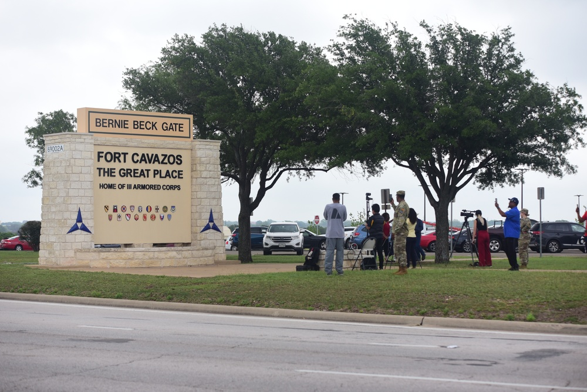

Insumos
Demanda de justicia de víctimas y familias; oposición a la pena de muerte; exigencias de legalidad y debido proceso.

Una decisión pública no termina cuando se firma. Entra al sistema, produce efectos, recibe respuestas y vuelve a ser procesada.
Hasan permanece en la prisión militar de Fort Leavenworth, Kansas, con una condena a muerte dictada en 2013.
¿Qué harías tú si fueras el presidente?
¿Puede una sentencia ser legal y, aun así, discutirse su legitimidad?
Justicia para las víctimas y sus familias ↔ dignidad humana y objeciones a la pena de muerte.
La decisión de ejecutar produce una nueva demanda: escoger un método legal en un contexto de escasez de fármacos para la inyección letal.
¿Puede llamarse “más humano” a un método de ejecución?
¿La dificultad logística debe cambiar una decisión de justicia?
Viabilidad de la decisión ↔ límites jurídicos y humanos del poder punitivo.
El Pentágono planea transmitir la ejecución en vivo. Según el experto en derecho militar Eugene Fidell, de Yale, sería algo inédito.
¿A quién beneficia y a quién perjudica transmitirlo en vivo?
¿La transparencia exige que todo acto estatal sea visible?
Transparencia pública ↔ dignidad humana, debido proceso y precedente inédito.
El caso muestra que una decisión autoritativa no cierra el sistema: produce nuevas demandas, nuevos conflictos de valor y nuevas respuestas institucionales.
Demanda de justicia de víctimas y familias; oposición a la pena de muerte; exigencias de legalidad y debido proceso.
Tribunal militar, Poder Ejecutivo, Pentágono y posibles tribunales federales procesan demandas, normas y recursos.
Condena de 2013; autorización de 2026; selección del fusilamiento; plan de transmisión en vivo.
Hábeas corpus, controversia pública y ausencia de precedente judicial pueden reabrir la conversión.
La ejecución no es inmediata. La revisión federal puede alterar cuándo, cómo o si llega a realizarse.
Pregunta guía para el debate evaluado: ¿en qué momento una decisión legalmente autorizada pierde legitimidad política o social?
Con las tres decisiones tomadas, se abre por fin el expediente real: esto fue lo que el sistema hizo en verdad, ronda por ronda. Contrástenlo con lo que la clase decidió.
La transmisión en vivo sigue sin desenlace: el plan del Pentágono convive con un hábeas corpus que todavía puede cambiar el resultado. La retroalimentación continúa fuera del aula.
Abre una ficha para conocer la posición de cada actor y qué arriesga en las decisiones del caso.